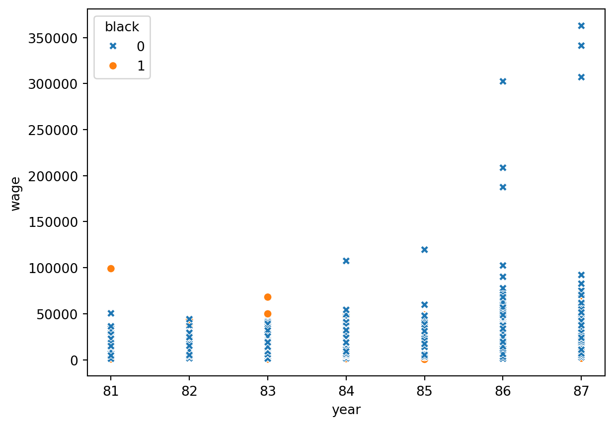
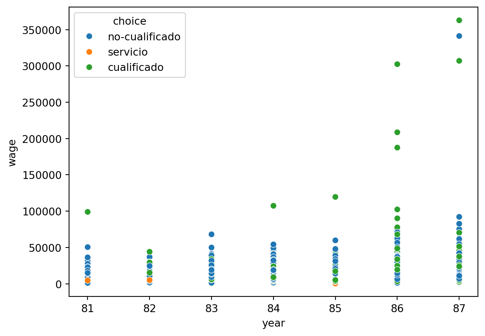
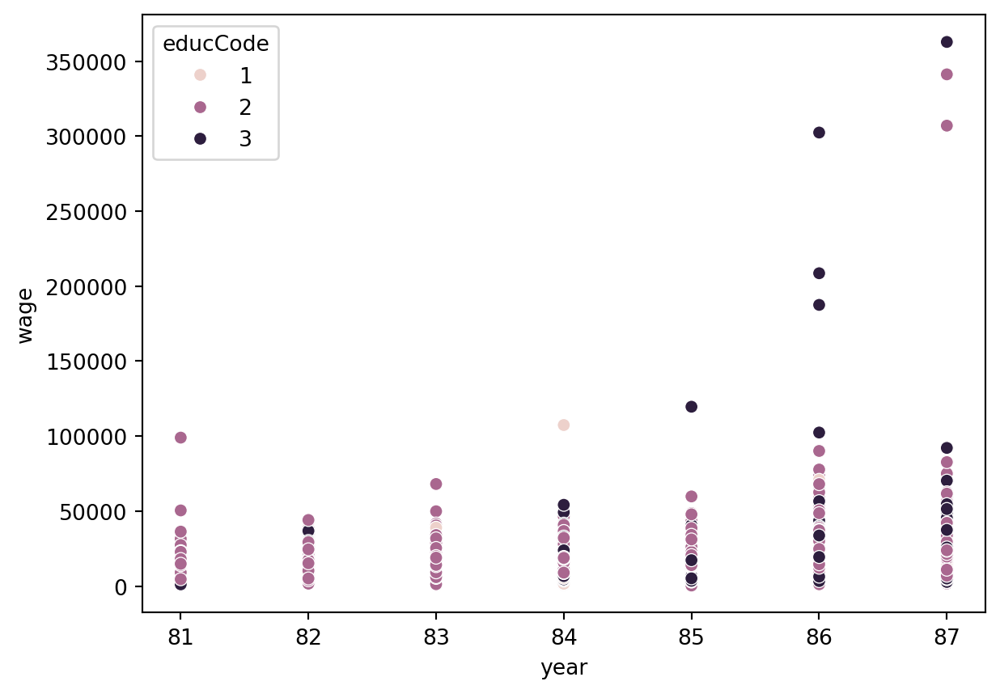

import pandas as pd
pd.options.display.max_columns=None
import numpy as np
from scipy import stats
import matplotlib.pyplot as plt
import seaborn as sbEn este post abordaremos un poco los datos keane obtenidos de Gretl
Empezaremos por importar las librerías necesarias
A continuación nos disponemos a visualizar los datos
keane=pd.read_csv("keane.csv")
keane=pd.DataFrame(keane)keane.head(5)| id | numyrs | year | choice | wage | educ | expwc | expbc | expser | manuf | black | lwage | enroll | employ | attrit | exper | expersq | status | |
|---|---|---|---|---|---|---|---|---|---|---|---|---|---|---|---|---|---|---|
| 0 | 1 | 9 | 81 | 2.0 | NaN | 10 | 0 | 0 | 0 | 0.0 | 1 | NaN | 0 | 0 | 0 | 0 | 0 | 2.0 |
| 1 | 1 | 9 | 82 | 2.0 | NaN | 10 | 0 | 0 | 0 | 0.0 | 1 | NaN | 0 | 0 | 0 | 0 | 0 | 2.0 |
| 2 | 1 | 9 | 83 | 2.0 | NaN | 10 | 0 | 0 | 0 | 0.0 | 1 | NaN | 0 | 0 | 0 | 0 | 0 | 2.0 |
| 3 | 1 | 9 | 84 | 1.0 | NaN | 10 | 0 | 0 | 0 | 0.0 | 1 | NaN | 1 | 0 | 0 | 0 | 0 | 1.0 |
| 4 | 1 | 9 | 85 | 2.0 | NaN | 11 | 0 | 0 | 0 | 0.0 | 1 | NaN | 0 | 0 | 0 | 0 | 0 | 2.0 |
Crearemos etiquetas para las observaciones de acuerdo a “choice” estudiante=1, hogar=2, cualificado=3, no-cualificado=4, servicio=5
keane["choice"]=np.where(keane["choice"]==1,"estudiante",
np.where(keane["choice"]==2,"hogar",
np.where(keane["choice"]==3,"cualificado",
np.where(keane["choice"]==4,"no-cualificado","servicio"))))Procedemos a gráficar la evolución de salarios separado por color de piel
sb.scatterplot(data=keane,x="year",y="wage",hue="black",style="black",style_order=[1,0])
plt.show()
plt.clf()
<Figure size 672x480 with 0 Axes>En esta gráfica evidenciamos que a lo largo de los años aumenta la discriminación.
Visualicemos lo siguiente: seleccionando sólo las personas que trabajan se realizara un gráfico de la evolución de los salarios separados por la variable choice
sb.scatterplot(data=keane[keane["employ"]==1],x="year", y="wage",hue="choice")
plt.show()
plt.clf()
<Figure size 672x480 with 0 Axes>Se observa que la terciarización de la economía ha aumentado las diferencias entre trabajadores cualificados y no cualificados, así como, entre servicio e industria.
Ahora procedamos al análisis de la variable educ para ello primero la Codificaremos de acuerdo a educación básica=1, educación media=2, y educación superior=3.
keane["educCode"]=np.where(keane["educ"]<=9,1,np.where(keane["educ"]<=12,2,3))Seleccionando solo las personas que trabajan tenemos lo siguiente:
sb.scatterplot(data=keane[keane["employ"]==1],x="year",y="wage",hue="educCode")
plt.show()
plt.clf()
<Figure size 672x480 with 0 Axes>